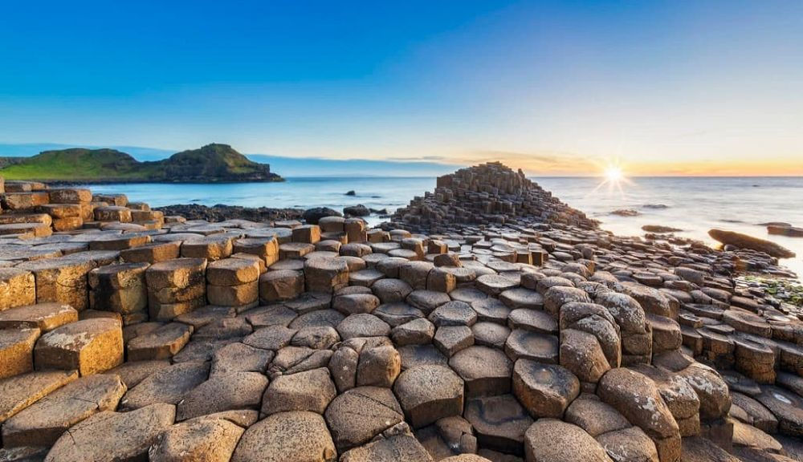

Descoperă Giants Causeway - O aventură pe coastele spectaculoase ale Irlandei de Nord
Giants Causeway reprezintă o atracție naturală uimitoare în Irlanda de Nord, oferind o priveliște de neuitat:
-

Coloanele de bazalt - Minune geologică
Aceste formațiuni naturale au fost create de activitatea vulcanică și creează un peisaj unic.
-

Organele de bazalt - Forme spectaculoase
Formațiuni hexagonale ale coloanelor seamănă cu organele unui instrument muzical.
-

Priveliște de la înălțime - Coaste impresionante
De la această înălțime, puteți admira atât formațiunile bazaltice, cât și marea revărsându-se.
-

Legendele - Povești fascinante
Există numeroase legende care explică originea și semnificația acestui loc unic.
-

Centrul pentru vizitatori - Informații utile
Puteți afla mai multe despre formațiuni și istoria acestui loc prin expoziții interactive.
Concluzii
Giants Causeway este o destinație de neratat pentru cei care doresc să exploreze minunile naturale ale Irlandei de Nord.